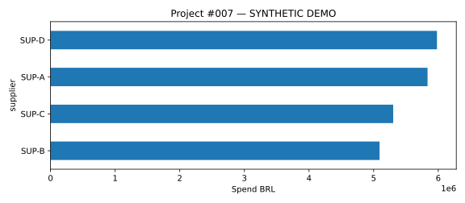

Visualização calculada

Métricas reproduzíveis
| Base de dados | synthetic / reproducible, not operational evidence |
|---|---|
| Projeto | 7 |
| Purchase orders | 340 |
| customers | 12 |
| Repeat customer % | 100,0 |
| Total spend BRL | 22.208.118 |
| Supplier hhi | 0,251 |
| interpretation | Synthetic purchase concentration; HHI based on spend shares, not market share. |
Reprodutibilidade
As tabelas são um resumo estático das métricas calculadas. Não afirmamos conectividade com SAP, Power BI ou operação produtiva.